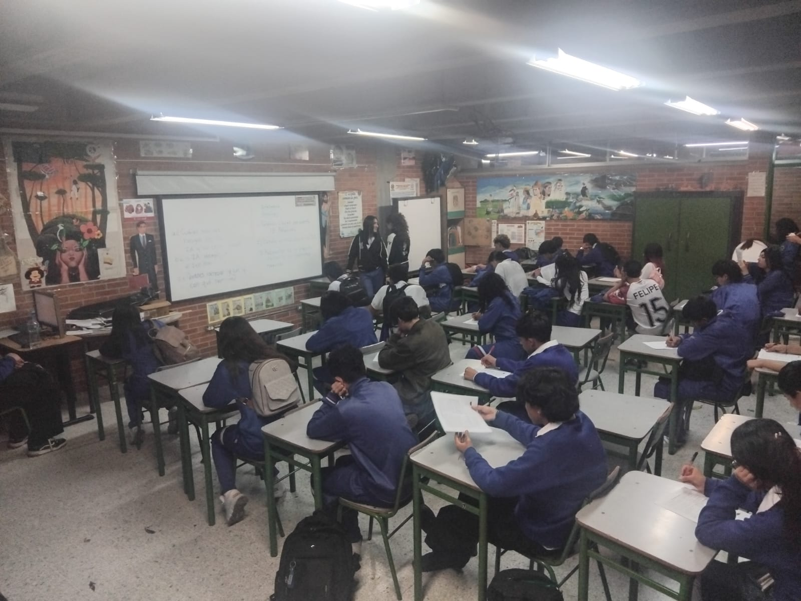
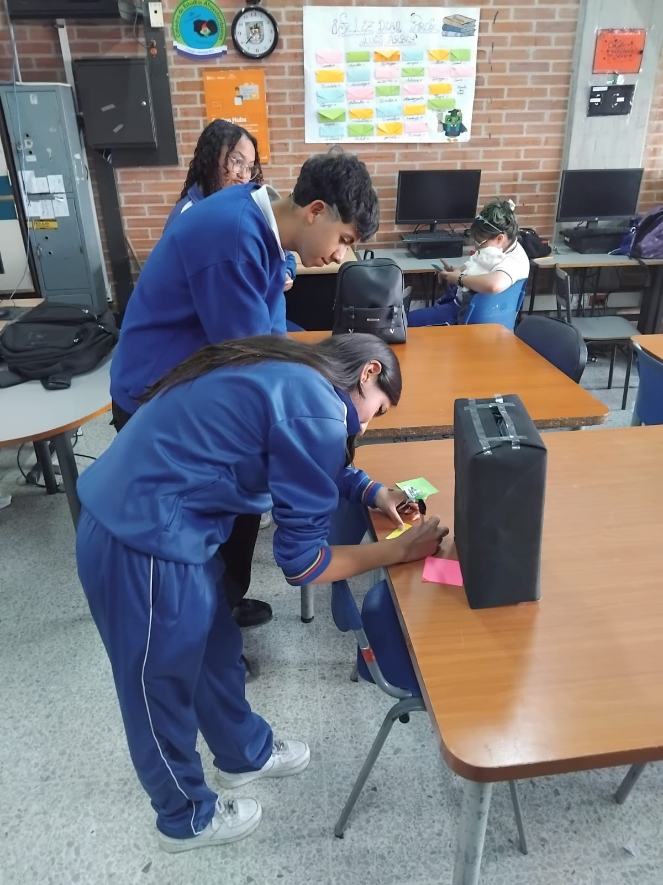
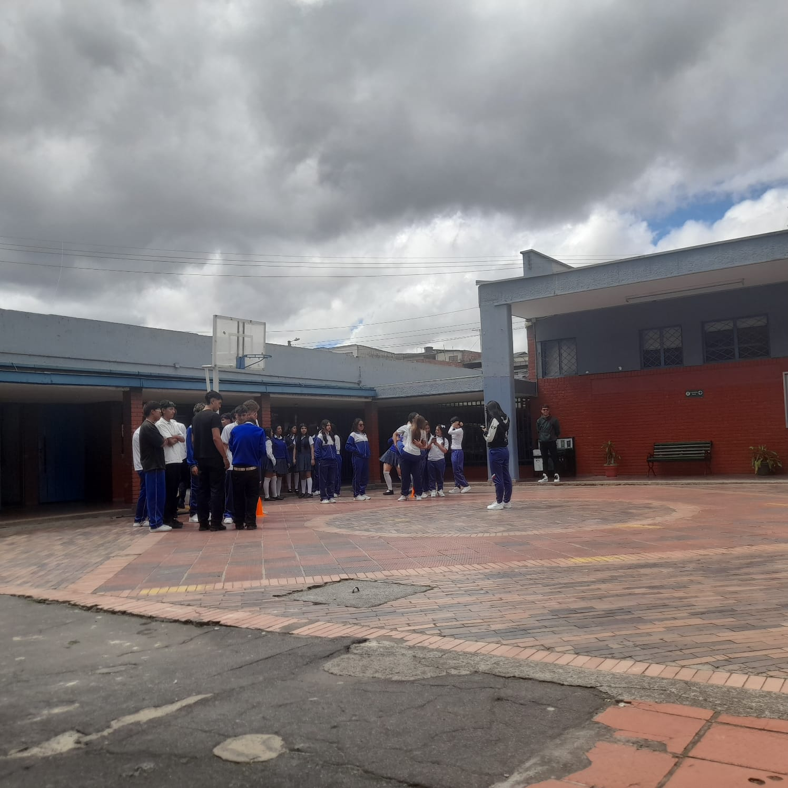
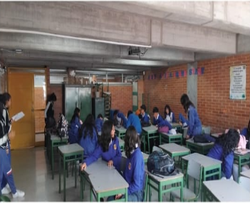

Simulacro

Simulacro para practicar y evaluar los conocimientos y fortalecer la preparación para las pruebas Saber 11.
01 · PROBLEMÁTICA
Muchos estudiantes llegan a las pruebas Saber 11 sin contar con suficientes herramientas para prepararse, practicar y reconocer cuáles son sus fortalezas y dificultades.
Además, en algunos casos el estudio puede convertirse en una actividad repetitiva y poco motivadora. Por esta razón, nuestro proyecto busca utilizar recursos digitales para facilitar el aprendizaje y permitir que los estudiantes practiquen de una manera más dinámica.
02 · OBJETIVO GENERAL
Desarrollar un plan de estudio organizado que permita reforzar los conocimientos en lectura crítica mediante la práctica constante, los simulacros y el uso adecuado del tiempo, con el fin de mejorar el desempeño académico y alcanzar las metas propuestas.
03 · OBJETIVOS ESPECÍFICOS
Mejorar la comprensión lectora y la capacidad de análisis mediante ejercicios de lectura crítica, fortalecer los conocimientos mediante la resolución de problemas, organizar el tiempo de estudio y desarrollar habilidades para controlar los nervios durante la prueba.
Ofrecer ejercicios y preguntas que permitan poner a prueba los conocimientos adquiridos.
Ayudar a los estudiantes a identificar sus fortalezas y trabajar en aquellos aspectos que necesitan mejorar.
04 · MISIÓN
Preparar a los estudiantes para la prueba Saber 11 mediante estrategias de estudio, ejercicios prácticos, simulacros y fortalecimiento de sus conocimientos, buscando mejorar su desempeño académico y brindarles mayor seguridad al presentar la prueba.
05 · VISIÓN
Ser estudiantes comprometidas y preparadas académicamente, capaces de obtener excelentes resultados en las pruebas Saber mediante el esfuerzo, la disciplina y el fortalecimiento continuo de las competencias evaluadas.
06 · TEMAS IMPORTANTES
Contenidos educativos para fortalecer los conocimientos.
Preguntas y ejercicios similares a los de la prueba.
Identificación de fortalezas y aspectos por mejorar.
Uso de herramientas digitales para facilitar el estudio.
07 · EVIDENCIAS
Fotografías de las actividades educativas realizadas durante el desarrollo del Proyecto Saber 11.

Simulacro para practicar y evaluar los conocimientos y fortalecer la preparación para las pruebas Saber 11.

Actividad educativa e interactiva que fomenta la participación y el aprendizaje de los estudiantes.

Dinámica grupal para responder preguntas, repasar contenidos y reforzar los conocimientos.

Los estudiantes se dividieron en dos grupos. Cada grupo eligió un representante para buscar los papeles con respuestas en el lado contrario del salón y participar en la resolución de las preguntas.
08 · CRONOGRAMA
Identificación del problema y recopilación de información.
Organización de las ideas, objetivos y contenidos.
Creación de la estructura y diseño de la plataforma.
Elaboración de la página y sus diferentes secciones.
Revisión del funcionamiento y corrección de errores.
Presentación final del proyecto y sus resultados.
Refuerza tu nivel de lectura crítica.
Pon a prueba lo aprendido mediante ejercicios y preguntas.
Identifica tus fortalezas y trabaja en tus puntos débiles.